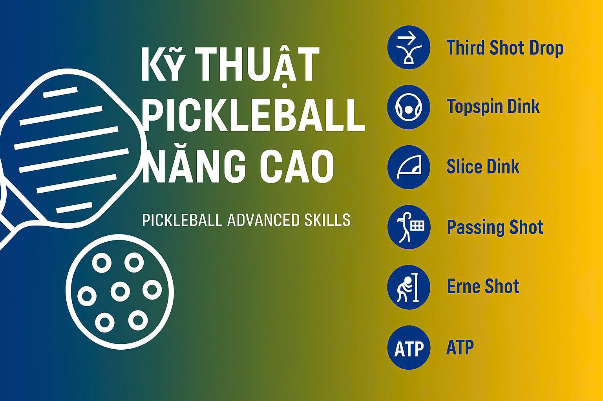

CLB AES Housing Pickleball Club

🏓 KHÁM PHÁ CÁC KỸ THUẬT PICKLEBALL NÂNG CAO – CHINH PHỤC ĐỈNH CAO THI ĐẤU AES Mông Dương Pickleball Club Pickleball không chỉ là một môn thể thao giải trí — mà còn là một cuộc đấu trí đỉnh cao, nơi mỗi pha xử lý thể hiện bản lĩnh, sự tinh tế và khả năng làm chủ chiến thuật của người chơi. Ngày nay, với sự phát triển mạnh mẽ của các giải đấu chuyên nghiệp, người chơi Pickleball có thêm nhiều cơ hội thử sức, nâng cấp trình độ và hướng đến mục tiêu vô địch. Nếu bạn đang khát khao nâng tầm kỹ năng và chinh phục sân đấu, hãy cùng AES Mông Dương Pickleball Club khám phá những cú đánh nâng cao và chiến thuật chuyên nghiệp dưới đây!
Cú đánh quan trọng giúp bạn tiếp cận khu vực NVZ và kiểm soát nhịp độ trận đấu...
Cú lốp bóng có xoáy giúp đẩy đối thủ lùi sâu và tạo cơ hội tấn công...
Dink có xoáy khiến bóng nảy nhanh và khó đoán, gây khó cho đối phương...
Tạo xoáy cắt khiến bóng chậm và kiểm soát hơn trong pha đấu...
Cú đánh vượt qua đối thủ, cực kỳ hiệu quả trong trận đơn...
Yêu cầu tốc độ và phản xạ nhanh, di chuyển ra ngoài sân để đón bóng trước khi chạm đất...
Cú đánh vòng quanh cột lưới, cực kỳ đẹp mắt và khó thực hiện...
Để vươn tới trình độ chuyên nghiệp, người chơi cần làm chủ các yếu tố kỹ thuật và chiến thuật sau:
Bên cạnh kỹ thuật, chiến thuật đóng vai trò quyết định trong việc giành chiến thắng: